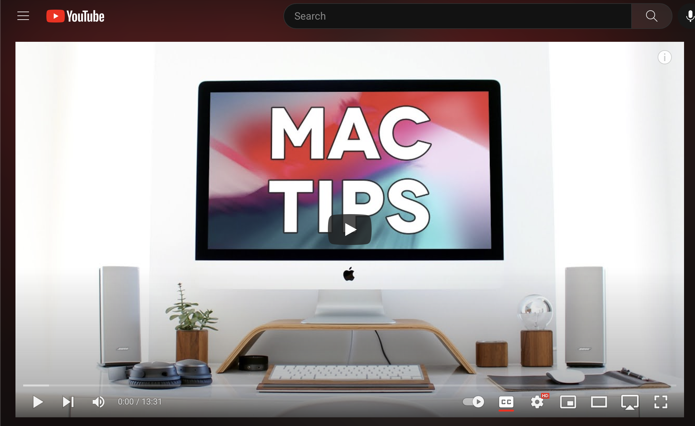
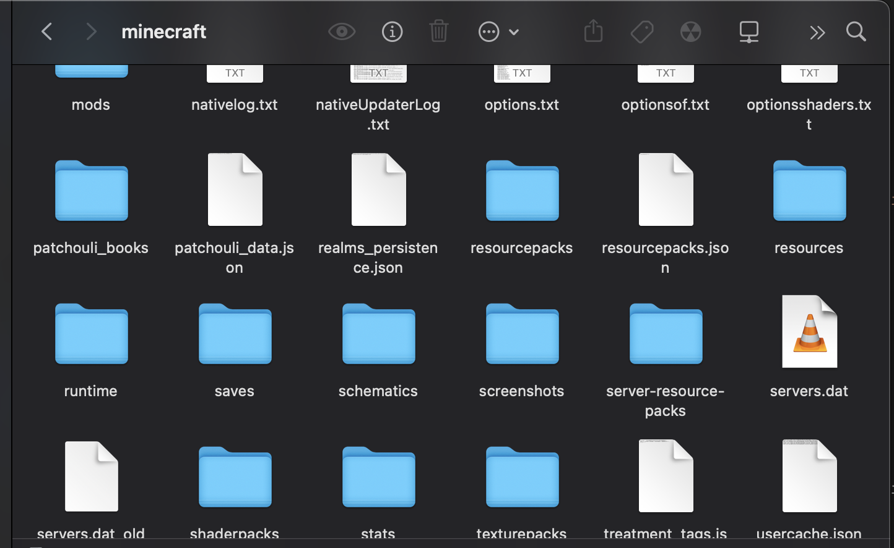
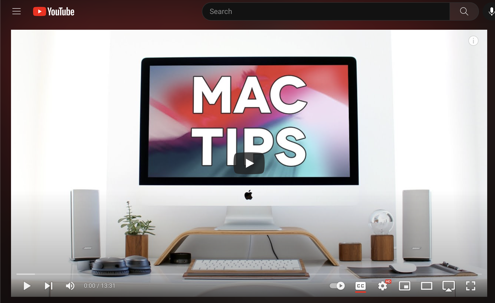
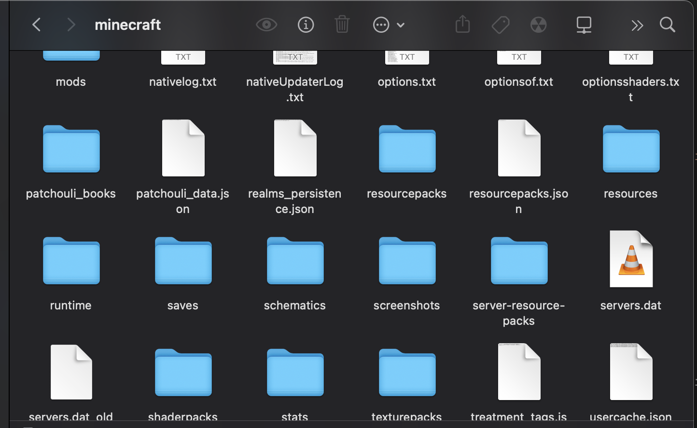

My passion for computers took root as a child after playing video games and watching tech-related YouTube videos. The map system in Poptropica and tank-killing system in Tanki Online were a complete mystery to me, so I always curious about them. As I grew older, I started experimenting with mods and automating redstone farms in Minecraft. Today, my knowlege has expanded to encompass Java, C++, and Python. Of course, I also had to learn HTML, CSS, and JavaScript to code this website. However, I'm still striving to learn more and solve real-world problems. I also love trying to solve logic questions and other thought-provoking problems. Feel free to explore the rest of my website.
 


